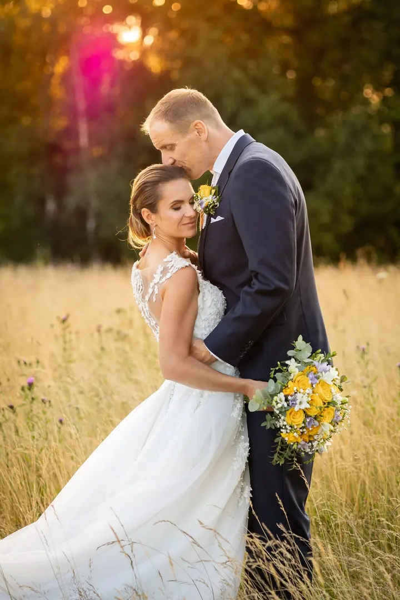
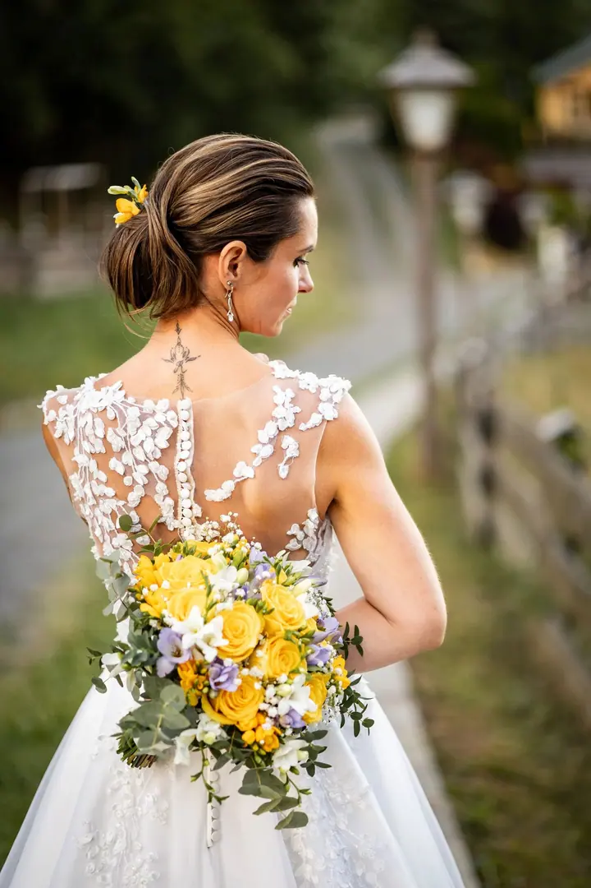
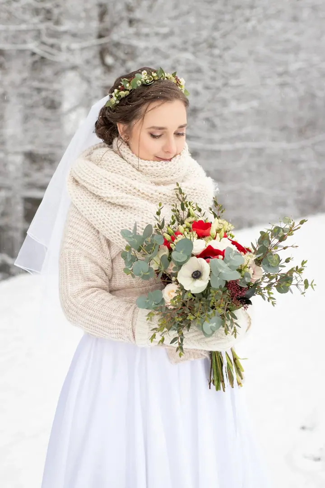

jedna
Svatební focení
Celý váš svatební den, zhruba 8 hodin focení a nejméně 250 upravených fotografií v elektronické podobě. Kratší i delší variantu si můžeme domluvit.

Svatební a rodinná fotografka · Valašsko, okolí Vsetína, Zlínský kraj

Jmenuji se Gabriela Jochcová a jsem učitelka a fotografka ze Zlínského kraje. Fotím hlavně svatby a rodiny, nejčastěji na Valašsku v okolí Vsetína. Focení je pro mě velký koníček, kterému se věnuji od roku 2017.
Více o mně
Co fotím
jedna
Celý váš svatební den, zhruba 8 hodin focení a nejméně 250 upravených fotografií v elektronické podobě. Kratší i delší variantu si můžeme domluvit.
dvě
Asi 45 až 60 minut v přírodě, nejčastěji při západu sluníčka. Dostanete nejméně 15 upravených fotografií.
Klidné focení v přírodě ve světle zapadajícího slunce. Trvá asi 45 až 60 minut a dostanete nejméně 15 upravených fotografií.
Fotím u vás doma, kde se miminko i vy cítíte nejlépe. Počítejte alespoň s hodinou focení.
Nejkrásnější světlo přichází při západu sluníčka
Za objektivem
Dobrý den, ahoj, vítejte! Jmenuji se Gabriela a vedle focení učím. Fotoaparát mě provází od roku 2017 a postupně se z koníčku stala práce, na kterou se pokaždé těším. Nejvíc se věnuji svatbám a rodinné fotografii.
Proč zrovna svatby? Upřímně: mám ráda svíčkovou. Kromě dobrého jídla mě ale na svatbách baví hlavně lidé, jejich objetí, drobná gesta a světlo, které se večer mění na zlatou.
Fotím převážně na Valašsku v okolí Vsetína. Pokud máte své oblíbené místo jinde, po dohodě se ráda vypravím i za vámi.
Gabriela
Napište nebo zavolejte, o jaké focení máte zájem a kdy by se vám hodilo. Domluvíme termín a podrobnosti.
Rodinné a těhotenské focení dělám v přírodě, nejraději při západu sluníčka. Newborn fotím u vás doma, svatbu tam, kde se berete.
Nikam nespěcháme. Ráda vás navedu, ale nejvíc mě baví přirozené chvíle mezi vámi.
Fotky pečlivě upravím a pošlu vám je v elektronické podobě.
Portfolio
Otázky
Svatební focení na 8 hodin stojí 15 000 Kč a dostanete nejméně 250 upravených fotografií. Kratší i delší variantu si můžeme domluvit.
Focení trvá asi 45 až 60 minut, probíhá v přírodě a stojí 1 800 Kč. Dostanete nejméně 15 upravených fotografií v elektronické podobě.
U vás doma, kde je miminku dobře. Počítejte alespoň s hodinou focení, cena je 1 800 Kč.
Fotím hlavně na Valašsku v okolí Vsetína, ale po dohodě se ráda vypravím i za vámi a na vaše oblíbené místo.